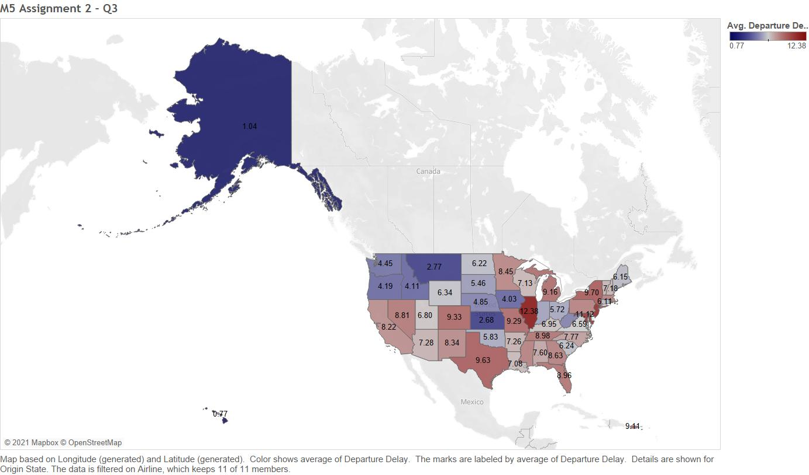

My Projects
Business Intelligence (Python):
-
Spam/Not Spam Binary Classification with Machine Learning
This project utilized text scraping methodologies to classify a dataset of text messages as either Spam or Not Spam. The models/algorithms used were Regression, Recurrent Neural Networks, Long Short-Term Memory (LSTM), and Bidirectional Encoder Representations from Transformers (BERT). These models were used to predict Spam/Not Spam messages and the best model was recommended.
-
Malignant/Benign Classification Regression
This project ran on the PySpark interface (Apache Spark in Python). The purpose of this project was to predict the severity of tumors on a binary level (malignant or benign) based on several physical characteristics. Data cleaning was executed and data visuals were produced for business intelligence. Machine Learning accuracy metrics were observed for predictive value.
Database Management (SQL):
-
Using SQL for Data Manipulation
These queries give examples of how SQL can be used for updating, creating, or deleting records in your database. The statements used here for data manipulation purposes were: Create, Update, Insert, Set, and Alter.
-
Table Joins & Subqueries
These queries give examples of complex joins, subqueries, and a combination of the two within the same coding structure. The main purpose of these queries are to showcase relevant database queries for business request fulfillment.
Data Visualization:
-
"Makeover Monday" Challenge
This Makeover Monday challenge visualized the eviction rates in San Francisco, CA from 1996 to mid-2019. The data was filtered by neighborhood which was captured by Longitude and Latitude coordinates that were given. The amount of evictions are represented by intensity of hue.
-
Average airline delay times
This visual shows average delay times by airline throughout the nation (separated by state). The color scheme is as follows: dark blue means very little delay, while dark red means high delay times. We can see that customers in Illinois must be pretty upset!
Web Development:
-
This Website!
I built this website from scratch after teaching myself HTML5 and CSS3 via this Udemy course. This site will be used to showcase my work in a user-friendly medium.
-
Shopping for some new Chucks?
This webpage was an HTML and CSS coding challenge from my Udemy course. The purpose of this challenge was to mimic an online shopping environment from the consumer perspective.